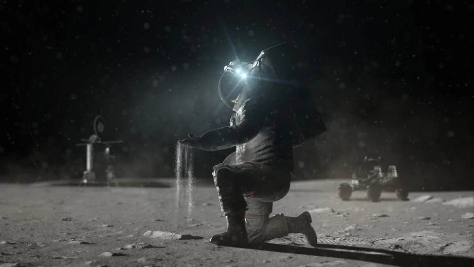
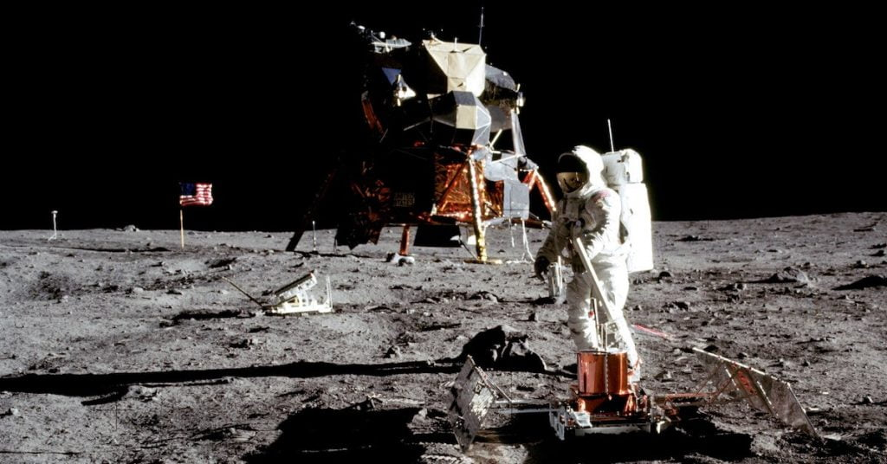
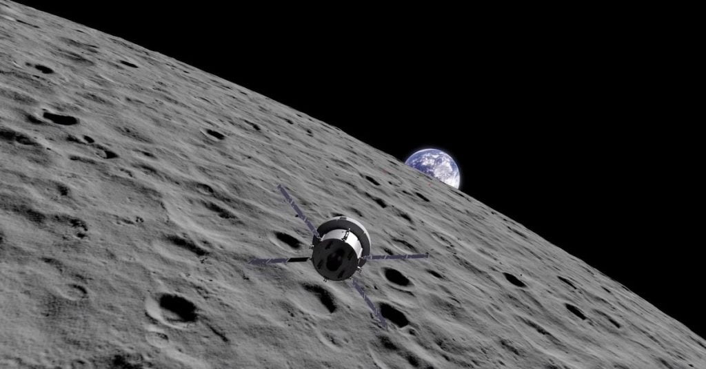

ယခုအခါ နာဆာ အဖွဲ့ကြီးဟာ တရုတ်တို့ လ ပေါ် အခြေမချ နိုင်မီမှာ လပေါ်က သတ္တုတွေကို ဦးအောင် တူးဖေါ်နိုင်ဖို့ လုံးပမ်းနေတယ် ဆိုတဲ့ သတင်းတွေ ထွက်ပေါ်လို့ လာနေပါတယ်။
နာဆာ (NASA) အဖွဲ့ကြီးဟာ လမျက်နှာပြင် ကနေ တူးဖေါ်ရရှိနိုင်မယ့် သတ္တုတွေကို 3D ပုံဖော်ခြင်း နဲ့ အခြားလုပ်ငန်းတွေမှာ အသုံးချနိုင်မယ့် နည်းလမ်းတွေ ရှာဖွေဖို့ သိပ္ပံ ပညာရှင် တွေကို ခေါ်ယူ စုဆောင်းနေတယ်လို့ သိရပါတယ်။
အခုလို အလုပ်ခေါ်ယူ စုဆောင်းမှု မတိုင်မီ ၂၀၂၂ အတွင်းကလဲ အမေရိကန် ပြည်တွင်းက တက္ကသိုလ် တွေနဲ့ သုတေသန အဖွဲ့အစည်း တွေနဲ့ ပူးတွဲ သုတေသန စီမံကိန်း အများအပြားကို စာချုပ် ချုပ်ဆို ခဲ့ပါတယ်။ ဒီ စီမံကိန်း တွေရဲ့ ရည်ရွယ်ချက် ဟာလဲ လပေါ်မှာ သတ္တု တူးဖေါ်တဲ့ လုပ်ငန်းစဉ်နဲ့ ပတ်သက်လို့ သုတေသန ပြု ရှာဖွေဖို့ပဲ ဖြစ်ပါတယ်။
“လပေါ်က နေရာဒေသ အစုံကနေ တူးဖေါ်လို့ ရနိုင်မယ့် သတ္တု အမျိုးအစား အစုံရှိပါတယ်။ အကယ်လို့ လပေါ်မှာ အဆောက်အဦ နဲ့ ဝတ္ထုပစ္စည်းတွေ ဆောက်လုပ်မယ် ဆိုရင် ဒီ သတ္တုတွေကို အသုံးချပြီး ကုန်ချော ထုတ်လုပ်မှုတွေ စတင် လုပ်ဆောင်ဖို့ လိုပါမယ်” လို့ နာဆာက တာဝန်ရှိသူ တစ်ဦးဖြစ်သူ မက်ဒီးန် (Matt Deans) က Bloomberg မဂ္ဂဇင်း ကြီးနဲ့ တွေ့ဆုံခန်းမှာ ထည့်သွင်း ပြောကြား ခဲ့ပါတယ်။

ဒီ အာတီးမီးစ် ဒုံးပျံ အောင်မြင်မှု အပြီး နာဆာ ဦးဆောင်သူ ဘီလ် နယ်ဆင် (Bill Nelson) က “တရုတ်တွေ သိပ္ပံ သုတေသန ဆိုတဲ့ အယောင်ဆောင် ခေါင်းစဉ်အောက်ကနေပြီး လပေါ် အခြေချခွင့် ရမသွားအောင် ဂရုစိုက် စောင့်ကြည့်ဖို့လိုမယ်” လို့ ပြောသွား ခဲ့ပါတယ်။
သူက ဆက်လက်ပြီး တရုတ်တွေသာ လပေါ် အခြေချခွင့် ရသွားရင် ဘာဆက် ဖြစ်လာမလဲဆိုတာကို လက်ရှိ တောင်တရုတ် ပင်လယ်က အခြေအနေ တွေနဲ့ ဥပမာပေးပြီး ပြသွားခဲ့ပါတယ်။
အခု နာဆာရဲ့ လပေါ် အခြေချဖို့ ကြိုးပမ်းမှုမှာ ၁၉၆၀ နှစ်တွေတုန်းက အပိုလို စီမံကိန်းနဲ့ မတူတဲ့ အဓိက အချက်တရပ် ရှိပါတယ်။ အဲ့ဒါကတော့ နာဆာဟာ လပေါ်ကို သူတယောက်ထဲ သွားမှာ မဟုတ်တာပါပဲ။

ဒီလို လပေါ်မှာ သတ္တု တူးဖေါ်ပြီး ရရှိလာတဲ့ သတ္တုကုန်ချော တွေကို အသုံးပြုနိုင်မယ့် နည်းလမ်းတွေ ရှာဖွေမှုဟာ လပေါ် လူသားတွေ အောင်မြင်စွာ အခြေချ နေထိုင်နိုင်ရေး အတွက် အလွန်ပဲ အရေး ကြီးပါတယ်။ ဒီ နည်းပညာ တွေဟာ လပေါ် လူသားတွေ ကာလကြာရှည်စွာ နေထိုင်ဖို့ လိုအပ်တဲ့ ကုန်ကျစားရိတ်ကို လျှော့ချ ပေးနိုင်မှာ ဖြစ်ပါတယ်။
ကြီးမားတဲ့ သတ္တုတူးဖေါ်မှုနဲ့ သတ္တု သန့်စင်မှု လုပ်ငန်းတွေ အကောင်အထည် ဖေါ်ဖို့ ဆိုတာကတော့ အလှမ်း ဝေးနေပါသေးတယ်။ ဘာ့ကြောင့်ဆို ဒီလို အကြီးအကျယ် တူးဖေါ်မှမျိုး ပြုလုပ်ဖို့ ဆိုရင် ရေ နဲ့ အောက်ဆီဂျင်တွေ လိုပါတယ်။ လပေါ် ရေ နဲ့ အောက်ဆီဂျင် ထုတ်ယူဖို့ဆို ကြီးမားတဲ့ ထုတ်လုပ်ရေး စနစ်တွေ အရင် တည်ဆောက်ဖို့ လိုမှာ ဖြစ်ပါတယ်။
လက်ရှိ အမေရိကန် နဲ့ တရုတ်တို့ရဲ့ ဆက်ဆံရေး အဆိုးရွားဆုံး အခြေအနေ ရောက်ရှိနေတာမို့ လပေါ်မှာ အတူပူးပေါင်း အခြေချဖို့ ဆိုတဲ့ မျှော်လင့်ချက်က အခွင့်အလမ်း အလွန် နည်းပါး နေတယ်လို့ ပညာရှင် အများစုက သုံးသပ် ကြကြောင်း တင်ပြလိုက်ပါတယ်။
